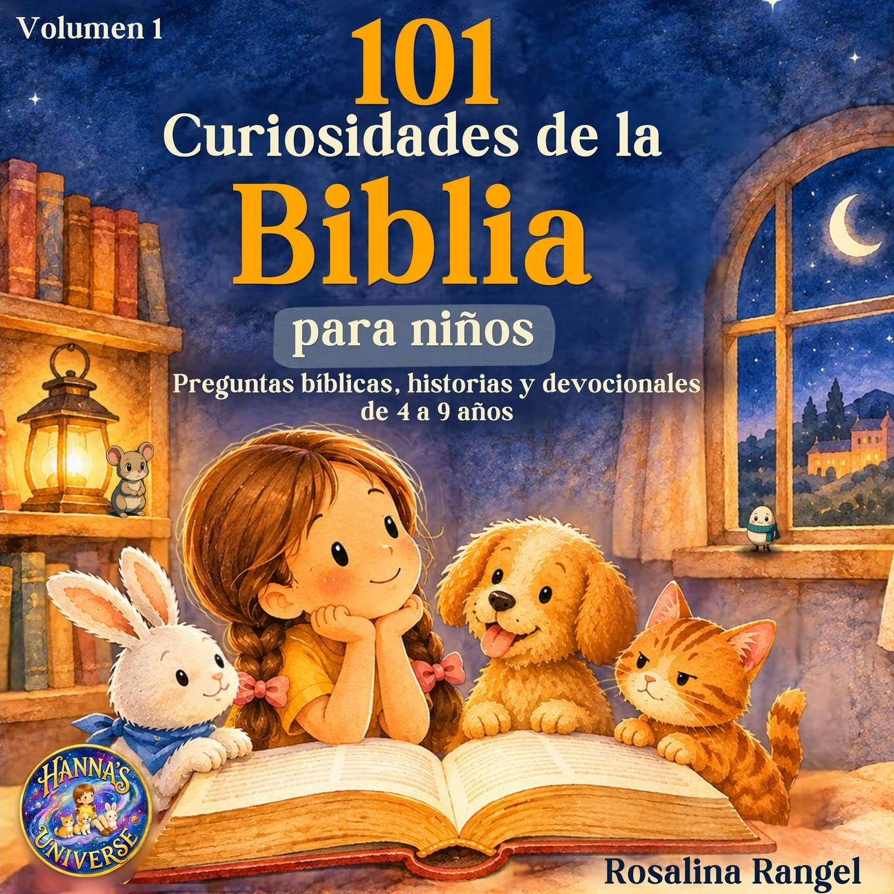

← Volver a la colección de Hanna

Guardar101 Curiosidades de la Biblia para niños: Volumen 1
$14.99¿Dios conoce todas las estrellas? ¿Quién le puso límites al mar? ¿Cómo pudo Noé construir un barco tan grande?
Los niños de 4 a 9 años preguntan todo, y cada pregunta abre una puerta para hablar de Dios en casa. En este primer volumen, Hanna y sus amigos Sagu, Michiko y Dogui encuentran 34 respuestas bíblicas sobre el cielo y el mar, las semillas y los animales, Noé y el arcoíris, y sobre cómo Dios nos hizo a cada uno.
Cada curiosidad se lee en pocos minutos antes de dormir y trae:
Una pregunta curiosa de las que hacen los niños
Una historia corta con Hanna y sus amigos
Un versículo de la Biblia en la Nueva Traducción Viviente (NTV)
La verdad del día, fácil de recordar
Una oración sencilla para orar juntos
Una pregunta para conversar en familia
Cada curiosidad viene con su ilustración a todo color. Este devocional infantil acompaña a los papás que quieren cerrar el día hablando de Dios con sus hijos y escuchando lo que ellos piensan.
Ideal para:
La lectura en familia antes de dormir
La escuela dominical y el ministerio infantil
El homeschool y las clases de valores
Regalar en Navidad, Pascua, cumpleaños o bautizo
Este es el Volumen 1 de la colección Curiosidades de la Biblia con Hanna. Los volúmenes 2 y 3 completan las 101 curiosidades.